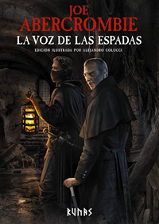
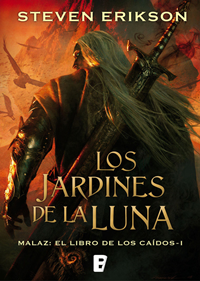
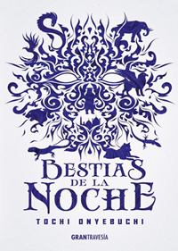

Libros recientes
Click al nombre del libro para acceder a la descarga
Click al nombre del autor para ver mas libros de su autoría
Click al nombre del libro para acceder a la descarga
Click al nombre del autor para ver mas libros de su autoría

La voz de las espadas
Joe Abercrombie
El inquisidor Glokta, convertido en un cínico tullido tras su paso por las cárceles de los enemigos de la Unión, es ahora a su vez un eficaz torturador capaz de extraer cualquier información de un criminal o de quien decidan sus superiores… El capitán Jezal dan Luthar no ha hecho en su vida nada más peligroso que desplumar a sus amigos jugando a las cartas y soñar con la gloria de vencer en el Certamen de esgrima. Pero se está fraguando una guerra, y en los campos de batalla del Norte la lucha se rige por normas mucho más sangrientas… Logen Nuevededos, infame bárbaro de pasado sangriento, acaba de perder a sus amigos y está decidido a abandonar sus tierras y dirigirse al Sur, pero los espíritus le advierten que le busca un Mago de los Viejos Tiempos… fantasía negra repleta de acción y personajes memorables.

Los jardines de la Luna
Steven Erickson
Tras interminables guerras, amargas luchas internas y sangrientas confrontaciones, incluso las tropas imperiales necesitan un descanso. Pero la obsesión expansionista de la emperatriz Lassen no tiene límites, y cuenta con el apoyo de sus sanguinarios agentes de la Garra. Tras el último asedio, el sargento Whiskeyjack y su pelotón de Arrasapuentes necesitan tiempo para descansar y enterrar a sus muertos, pero Darujhistan, la última de las Ciudades Libres de Genabackis, les espera. Es el objetivo último de la insaciable emperatriz. Y parece que el Imperio no es el único que codicia esa plaza: fuerzas siniestras conspiran dentro y fuera de las sendas mágicas, y todo indica que los propios dioses se preparan para la batalla...
El demonio de Arbennios
Bernard Torelló
Kai es un antiguo soldado de élite que reside en Arbennios, capital del reino de Lénoda, cuya monótona vida se sustenta en tres pilares: un trabajo en la guardia del noble señor Nárenwal, la compañía de su leal grupo de amigos y las furtivas visitas de su amante secreta. Por desgracia, durante un caluroso día de verano tendrá lugar un ataque inesperado que dará un giro a su vida. Condenado por la misma sociedad a la que había defendido durante años, Kai se verá arrastrado por un torbellino de emociones y violencia que lo llevarán por el oscuro camino de la venganza.

Bestias de la noche
Toche Onyebuchi
En la ciudad amurallada de Kos, los magos corruptos pueden conjurar las perversiones cometidas por un pecador en monstruosas bestias: criaturas letales engendradas por los sentimientos de culpa. Taj es el más talentoso de los aki, jóvenes devoradores de pecados al servicio de los magos para deshacerse de dichas bestias. Pero la forma de vida de Taj tiene un precio terrible. Cuando mata a una bestia del pecado, un tatuaje con la forma de esa bestia aparece en su piel mientras que la culpa de esa falta se materializa en su mente. La mayoría de los aki no tardan en caer en la locura, sin embargo Taj tiene 17 años, es arrogante y está desesperado por ayudar a dar sustento a su familia. Cuando a Taj se le ordena devorar un pecado de un miembro de la realeza, se ve arrastrado en una oscura conspiración. Entonces deberá luchar por salvar a los seres que ama y su propia vida.
Noticias

Literatura en redes sociales, una nueva forma de promoción
Los bookfluencers, las redes y las plataformas para compartir reseñas generaron un nuevo circuito comercial en la industria

Iosi Havilio genera un diálogo creativo entre la novela y el arte de la novela
El escritor, que acaba de publicar “Buuuh!”, continúa sus experimentos artísticos. Su muestra con tapas y páginas de sus libros intervenidas en el Centro Cultural Borges, es un nuevo paso en ese sentido

Gloria Peirano y “Miramar”, su novela de varias vidas: “La emoción cruda no sirve para la literatura”
La escribió en 2003, ganó un premio en 2007, se publicó por primera vez en 2012 y en 2022 fue reeditada. La novela cuenta la historia de una mujer que regresa a su infancia, quebrada por la temprana muerte de su padre. La conduce una obsesión: con quién habló él por teléfono poco antes de morir

Martín Caparrós y Laura Alcoba, galardonados con el premio Roger Caillois
Caparrós por su libro “Ñamérica” en la categoría “literatura latinoamericana” y Alcoba por “Les rives de la mer Douce” en “literatura francesa”, obtuvieron el prestigioso lauro literario francés

Los 10 libros más vendidos de la semana
Estas son las novelas y libros de no ficción más vendidos de esta semana

De la tablilla a la pantalla: la historia (escrita) del mayor invento de la humanidad
Más que el fuego, el arado o la rueda, la escritura es la gran creación de la especie humana. En el sorprendente 'Los trazos que hablan', el lingüista José Antonio Millán descubre sus orígenes, analiza su evolución y defiende su vigencia en el mundo digital

Periodismo de altos vuelos: las vidas de un grupo de gentuza selecta
Narcos, estafadores, asesinos... Patrick Radden Keefe, periodista de 'The New Yorker', publica en este absorbente volumen doce reportajes sobre individuos al margen de la ley y la moral

Silvina Ocampo, una maestra de lo fantástico
Reconocida póstumamente como una autora de referencia, la obra de la escritora, siempre a la sombra de su entorno y su personalidad, vive una segunda juventud con múltiples ediciones revisadas como la de Lumen

Las brillantes indagaciones imaginativas de Iban Zaldua
En este libro de relatos, Iban Zaldua aboga por la imaginación como puerta para el cuestionamiento de lo real y herramienta de especulación literaria